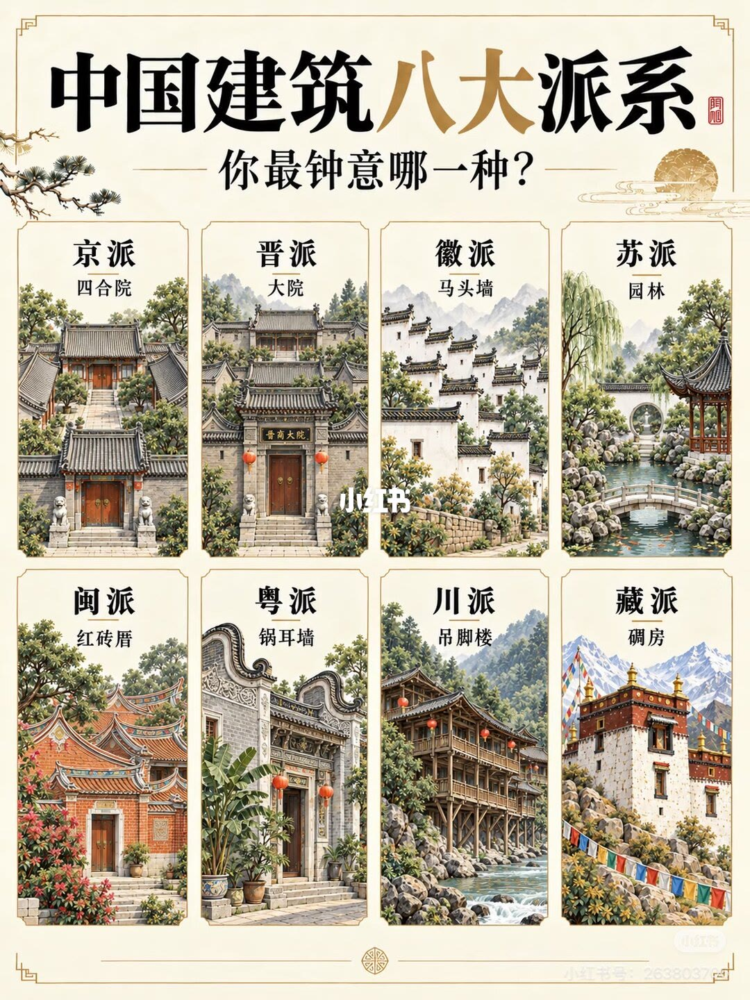
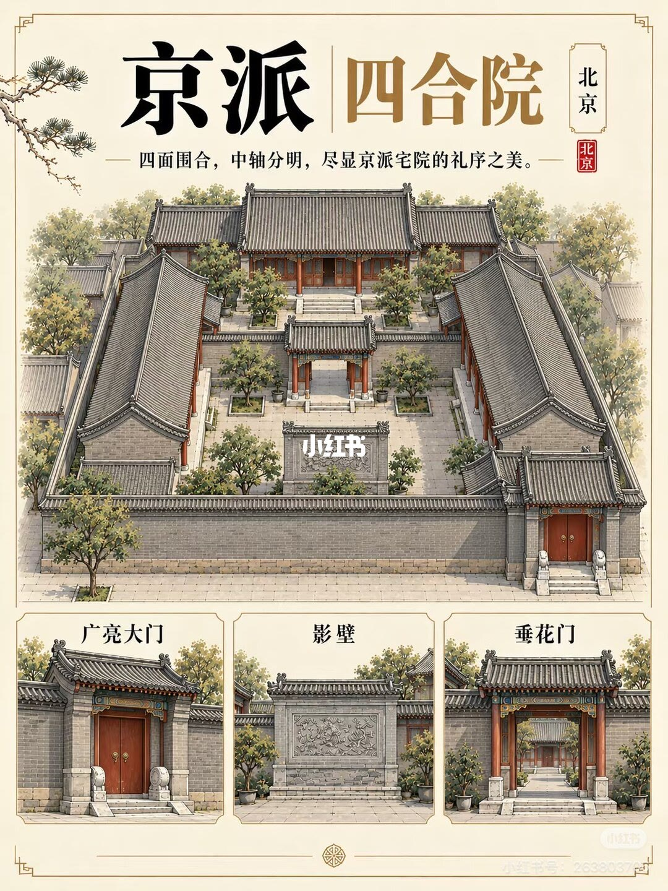
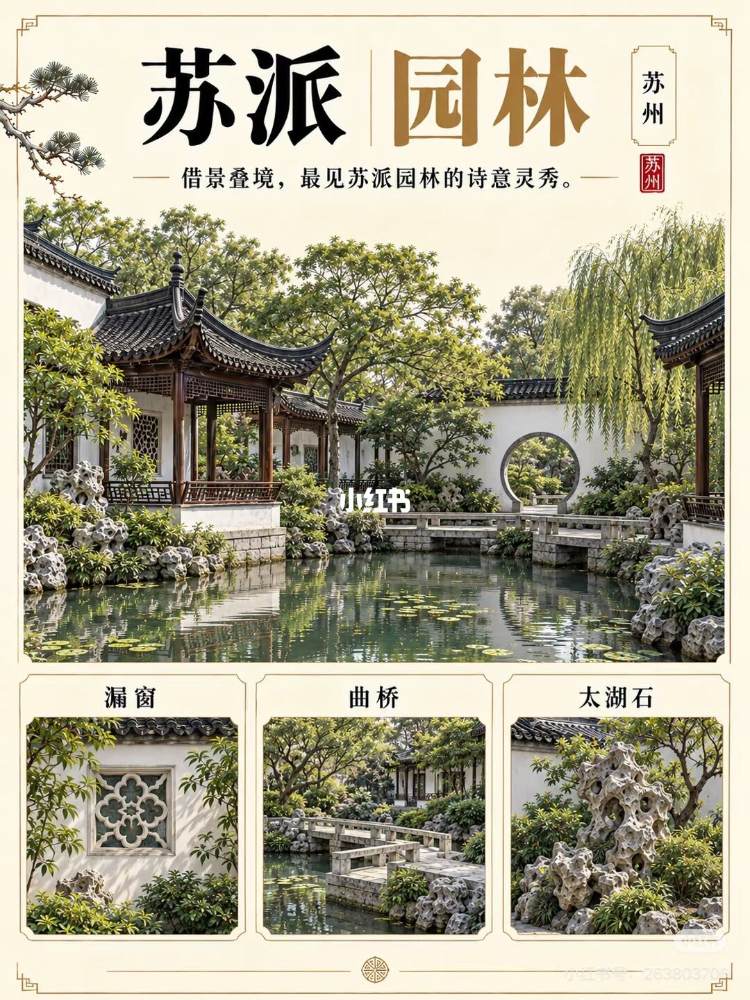
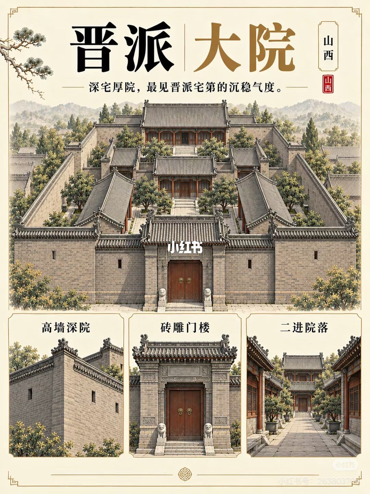
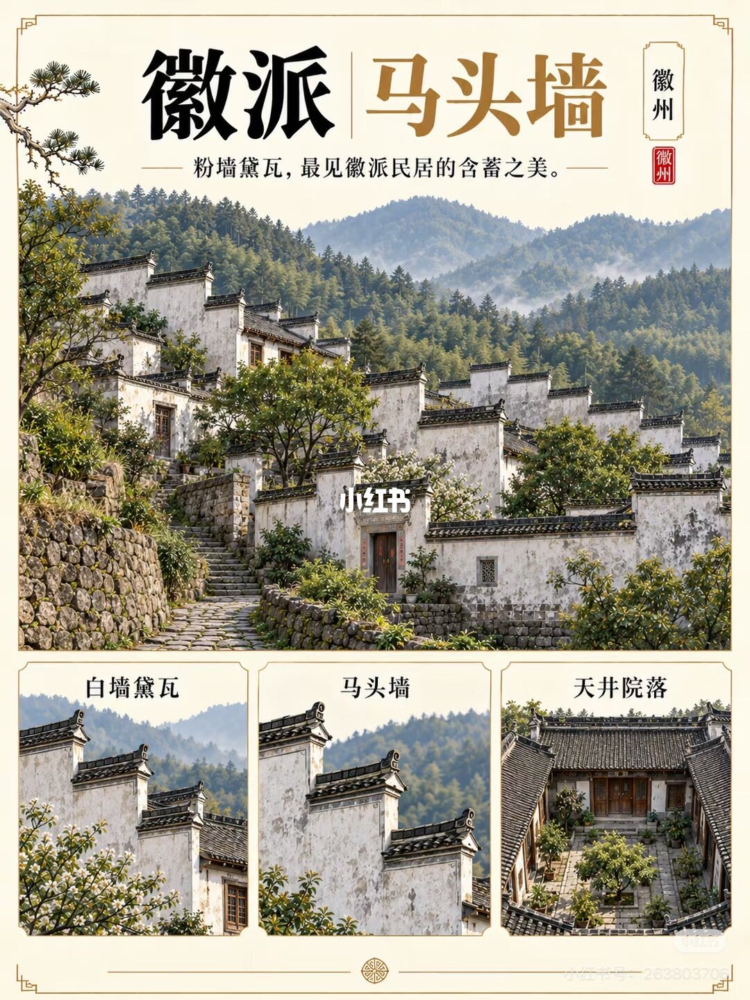
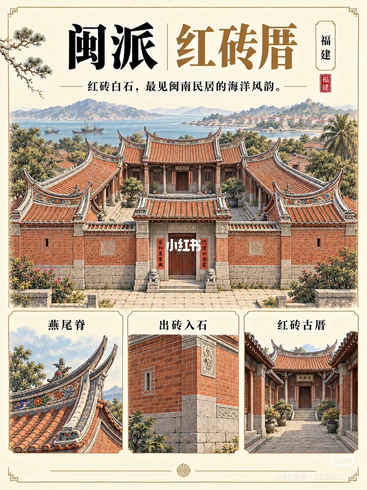
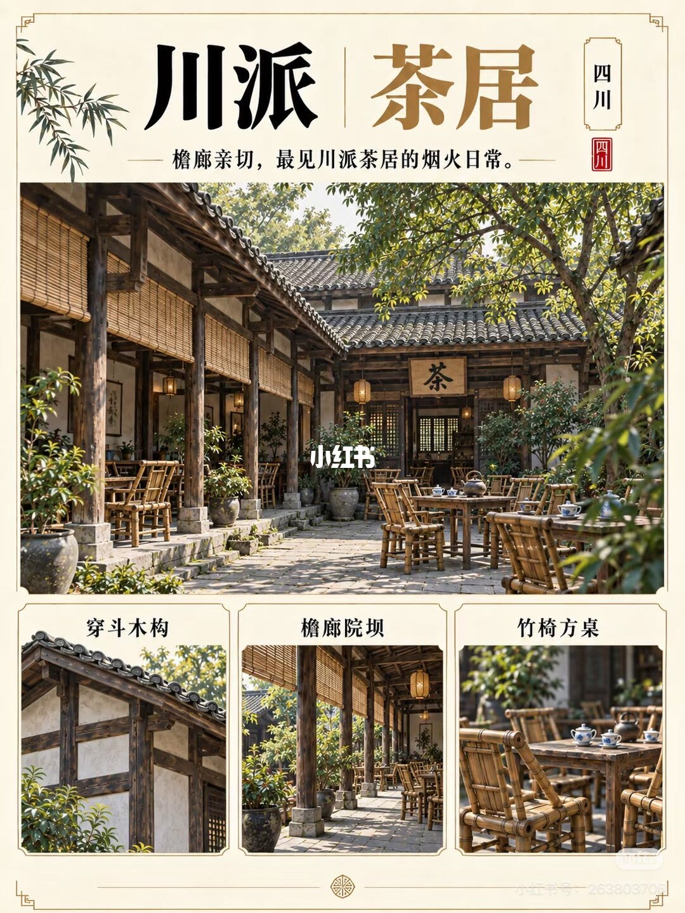
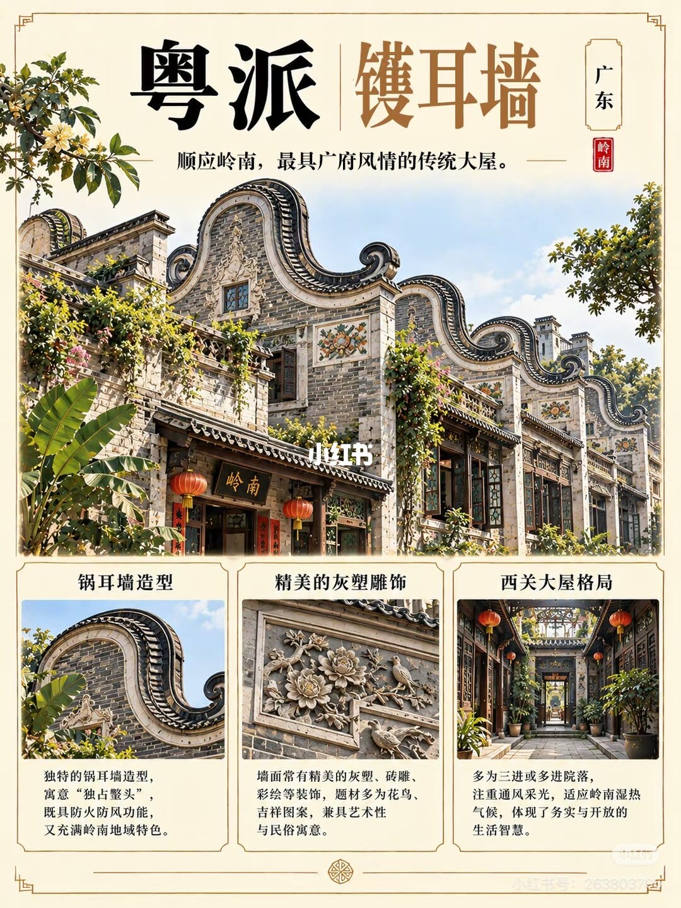
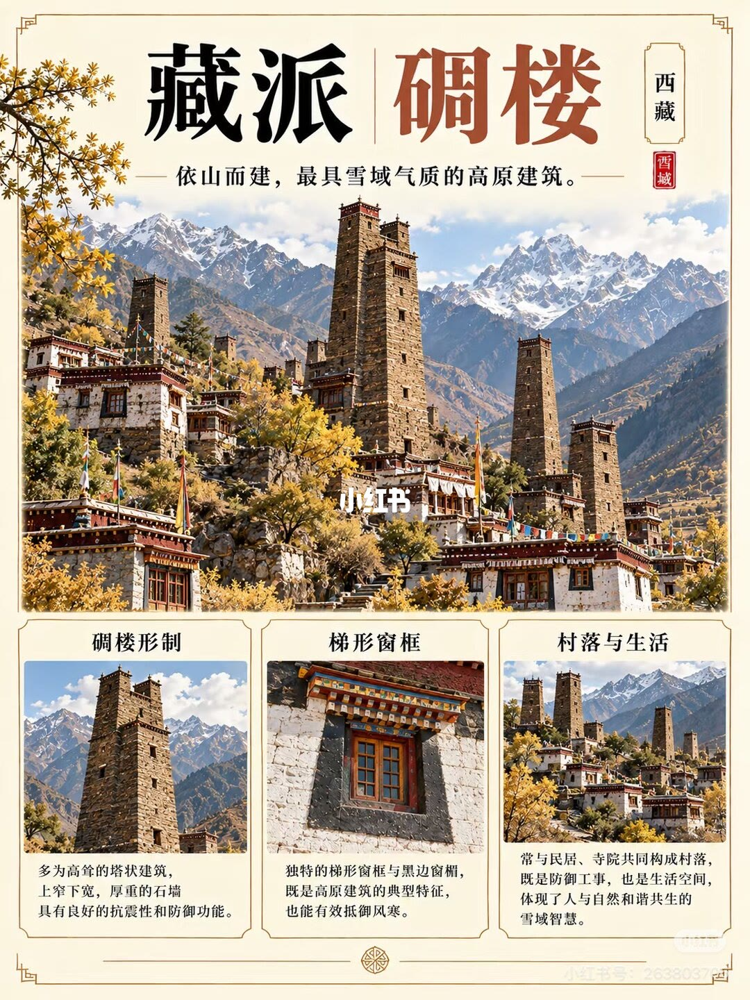

第 1 页：八大派系总览

1/9封面「中国建筑八大派系」：京晋徽苏闽粤川藏八格，问你最钟意哪一种。
Cover: eight Chinese vernacular schools in a grid—which do you favor?
开篇把八派并置：四合院、大院、马头墙、园林、红砖厝、镬耳墙、吊脚楼、碉房。笔记文案希望这些民居美学进入动漫与武侠视觉。
第 2 页：京派 · 四合院

2/9京派四合院：四面围合、中轴分明；广亮大门、影壁、垂花门构筑礼序。
Beijing siheyuan: axial enclosure; Guangliang gate, screen wall, festooned gate.
礼序美学：对称轴线与正房、厢房层级。广亮大门、影壁挡视线、垂花门分隔内外院。
第 3 页：苏派 · 园林

3/9苏派园林：借景叠境；漏窗、曲桥、太湖石把山水微缩进院。
Suzhou gardens: borrowed views; lattice windows, zigzag bridges, Taihu rocks.
移步换景是核心。漏窗取景、曲桥折线、太湖石造境，共同构成江南文人气息。
第 4 页：晋派 · 大院

4/9晋派大院：深宅厚院；高墙深院、砖雕门楼、二进院落透晋商气度。
Shanxi compounds: high walls, brick-carved gates, deep courtyards of merchant families.
防御与家族秩序并重：外墙如堡，门楼砖雕细密，内进院落层层递进。
第 5 页：徽派 · 马头墙

5/9徽派马头墙：粉墙黛瓦；白墙黛瓦、马头墙防火防风、天井院落。
Huizhou: white walls, dark tiles, horse-head firewalls, skywell courtyards.
错落马头墙既防火也形成天际线节奏；天井把光与雨水引入内院。
第 6 页：闽派 · 红砖厝

6/9闽派红砖厝：红砖白石；燕尾脊、出砖入石、红砖古厝见海洋风韵。
Minnan red-brick houses: swallowtail ridges, brick-in-stone masonry, coastal flair.
双燕尾脊与红砖白石墙是视觉语言；出砖入石墙体兼构造与装饰。
第 7 页：川派 · 茶居

7/9川派茶居：檐廊亲切；穿斗木构、檐廊院坝、竹椅方桌是烟火日常。
Sichuan tea houses: chuandou timber, eaves corridors, bamboo chairs and square tables.
穿斗架轻巧，檐廊下竹椅方桌把公共生活摊开——美学落在日常而非礼制。
第 8 页：粤派 · 镬耳墙

8/9粤派镬耳墙：顺岭南气候；镬耳造型防火防风、灰塑雕饰、西关多进通透。
Cantonese wok-ear gables: fire/wind function, plaster reliefs, multi-bay Xiguan mansions.
镬耳寓「独占鳌头」，亦适湿热通风；灰塑花鸟与多进院落是广府大屋标志。
第 9 页：藏派 · 碉楼

9/9藏派碉楼：依山雪域；塔状石墙抗震防御、梯形窗框、村落与寺院共生。
Tibetan diaolou: tapering stone towers, trapezoid windows, village–temple coexistence.
上窄下宽石墙兼抗震与防御；黑边梯形窗抗风寒；碉楼与民居寺院同构雪域聚落。
文末汇总
核心判断：八派不是景点清单，而是可被视觉系统复用的空间语法——轴线礼序、借景叠境、高墙防御、粉墙节奏、海洋红砖、岭南镬耳、檐廊烟火、雪域碉楼。
- 做设定先选「派」再选构件
- 武侠场景用气候逻辑解释造型
- 勿把八派缩成单一「古风滤镜」
以上为原笔记图文观点整理，不是对该主题的全面定论。